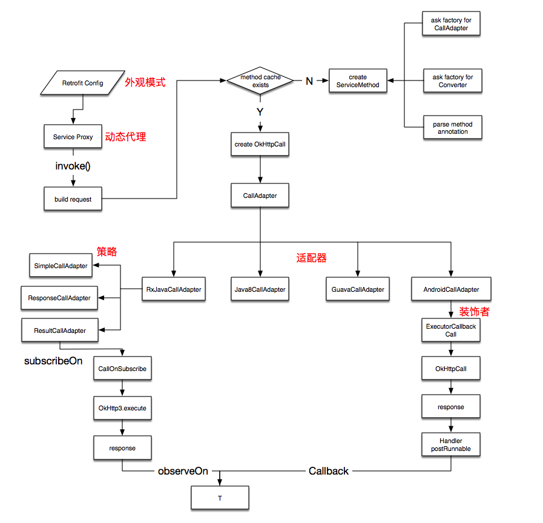

Retrofit分析
Retrofit可以当做是OkHttp3的应用层。其接收Java注解的请求。
用法
1
2Retrofit retrofit = new Retrofit.Builder().baseUrl(url).addConvertFactory(factory).build();
retrofit.create(class);
源码分析
1
2
3
4
5
6
7
8
9
10
11
12
13
14
15
16
17
18
19
20
21
22
23
24
25public <T> T create(final Class<T> service) {
Utils.validateServiceInterface(service);
if (validateEagerly) {
eagerlyValidateMethods(service);
}
return (T) Proxy.newProxyInstance(service.getClassLoader(), new Class<?>[] { service },
new InvocationHandler() {
private final Platform platform = Platform.get();
public Object invoke(Object proxy, Method method, Object... args)
throws Throwable {
// If the method is a method from Object then defer to normal invocation.
if (method.getDeclaringClass() == Object.class) {
return method.invoke(this, args);
}
if (platform.isDefaultMethod(method)) {
return platform.invokeDefaultMethod(method, service, proxy, args);
}
ServiceMethod<Object, Object> serviceMethod =
(ServiceMethod<Object, Object>) loadServiceMethod(method);
OkHttpCall<Object> okHttpCall = new OkHttpCall<>(serviceMethod, args);
return serviceMethod.callAdapter.adapt(okHttpCall);
}
});
}
create方法接收客户端定义的api接口
主要工作：
- 使用代理模式创建出接口对应的类
- 加载接口里面的方法，并缓存
- 如果方法不存在，创建
ServiceMethod，并缓存 - 使用
API接口的方法创建OkHttpCall - 将
okHttpCall与callAdapter关联
ServiceMethod
1
2
3
4
5
6
7
8
9
10
11
12
13
14
15
16
17
18
19
20
21
22
23
24
25
26
27
28
29
30
31
32
33
34
35
36
37
38
39
40
41
42
43
44
45
46
47
48
49
50
51
52
53
54
55
56
57
58
59
60
61public ServiceMethod build() {
callAdapter = createCallAdapter();
responseType = callAdapter.responseType();
if (responseType == Response.class || responseType == okhttp3.Response.class) {
throw methodError("'"
+ Utils.getRawType(responseType).getName()
+ "' is not a valid response body type. Did you mean ResponseBody?");
}
responseConverter = createResponseConverter();
for (Annotation annotation : methodAnnotations) {
parseMethodAnnotation(annotation);
}
if (httpMethod == null) {
throw methodError("HTTP method annotation is required (e.g., @GET, @POST, etc.).");
}
if (!hasBody) {
if (isMultipart) {
throw methodError(
"Multipart can only be specified on HTTP methods with request body (e.g., @POST).");
}
if (isFormEncoded) {
throw methodError("FormUrlEncoded can only be specified on HTTP methods with "
+ "request body (e.g., @POST).");
}
}
int parameterCount = parameterAnnotationsArray.length;
parameterHandlers = new ParameterHandler<?>[parameterCount];
for (int p = 0; p < parameterCount; p++) {
Type parameterType = parameterTypes[p];
if (Utils.hasUnresolvableType(parameterType)) {
throw parameterError(p, "Parameter type must not include a type variable or wildcard: %s",
parameterType);
}
Annotation[] parameterAnnotations = parameterAnnotationsArray[p];
if (parameterAnnotations == null) {
throw parameterError(p, "No Retrofit annotation found.");
}
parameterHandlers[p] = parseParameter(p, parameterType, parameterAnnotations);
}
if (relativeUrl == null && !gotUrl) {
throw methodError("Missing either @%s URL or @Url parameter.", httpMethod);
}
if (!isFormEncoded && !isMultipart && !hasBody && gotBody) {
throw methodError("Non-body HTTP method cannot contain @Body.");
}
if (isFormEncoded && !gotField) {
throw methodError("Form-encoded method must contain at least one @Field.");
}
if (isMultipart && !gotPart) {
throw methodError("Multipart method must contain at least one @Part.");
}
return new ServiceMethod<>(this);
}
主要工作:
- 创建请求适配器
- 创建响应适配器
- 解析方法注解
- 解析参数注解
流程图
